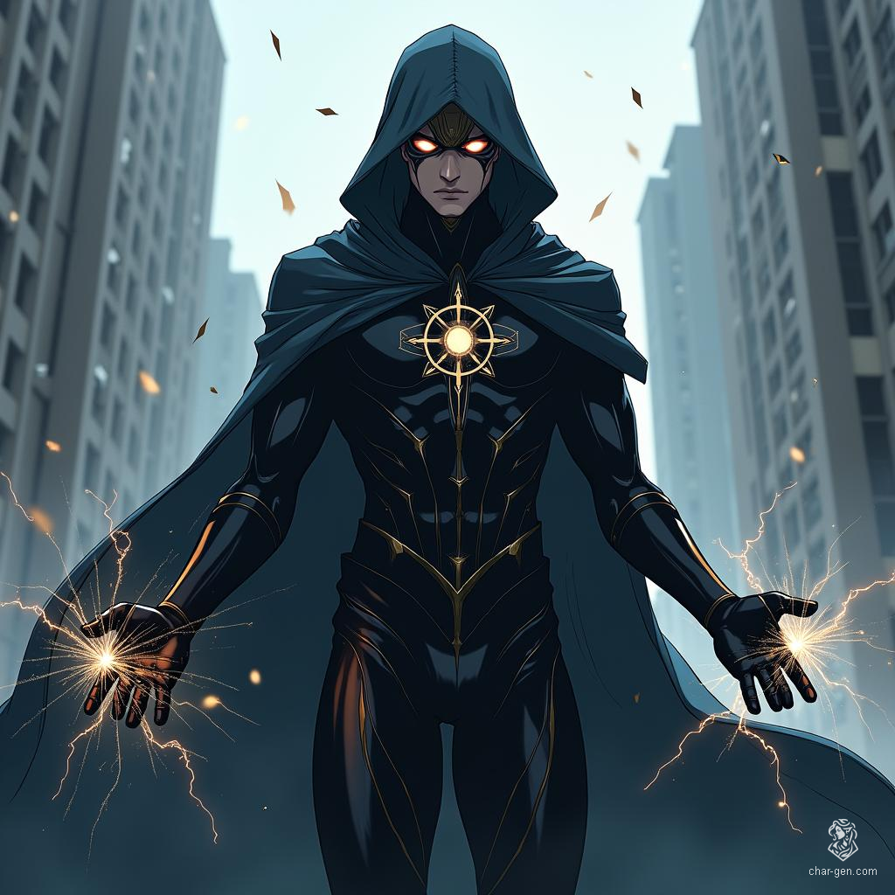

Fateweaver: The Divine Detective of Boston

Origins and Family
Akira Tanaka grew up in Boston's vibrant Chinatown district,
born to Japanese immigrants who seemed to straddle two
worlds. His mother Yuki ran "The Lucky Cat," a
fortune-telling shop that attracted both tourists and true
believers. His father Kenji served as a respected detective
in the Boston Police Department, bridging the gap between
law enforcement and the local Asian community.
Unknown to outsiders, Yuki carried a profound secret: she traced her lineage directly to Daikikuten, the Shinto god of fortune and luck. For generations, her family had served as mortal vessels for divine power, though their abilities manifested in subtle ways. Through her divination, Yuki could sense propitious moments and guide clients toward favorable paths.
Early Life
Growing up, Akira absorbed both his parents' influences. He
spent afternoons watching his mother perform readings with
her ornate omikuji sticks and evenings listening to his
father's detective stories. His childhood friend Mai Suzuki,
whose parents owned the restaurant next door, shared his
interest in mysteries and later became a crime reporter.
Akira excelled in school, displaying an uncanny ability to be in the right place at the right time. His teachers noted his talent for solving problems and finding lost items. His grandmother Sachiko, who lived with the family, recognized these as early signs of his divine heritage and secretly began teaching him about his supernatural lineage.
The Awakening
At 25, Akira had established himself as a private
investigator, working from a small office above his mother's
shop. He specialized in finding missing persons and lost
objects, using his inherited intuition to guide his
investigations. His father's police connections,
particularly through Detective Sarah Chen, provided him
access to cases that often had unusual elements.
His divine powers fully manifested during a violent bank robbery. While gathering evidence for an unrelated case, Akira found himself caught between police and armed robbers. As bullets impossibly curved around him and the robbers stumbled over their own feet, Akira realized he could actively influence probability. The incident caught the attention of both mortal and supernatural authorities.
Network of Allies
BAA Training
Captain Marvel discovered Akira’s abilities after noticing
the statistically impossible success rate in his cases. His
recruitment to the Boston Avengers Academy opened new doors
but also presented challenges. Classmates initially viewed
his “luck powers” with skepticism until a training exercise
where he singlehandedly defeated a squad of combat drones by
causing them to malfunction in sequence.
At the Academy, Akira works to master his probability manipulation under the guidance of experienced heroes. His investigative background and supernatural heritage give him a unique perspective on crime-fighting. He has formed close relationships with classmates, particularly bonding with Mind Wave over their shared interest in solving mysteries.
Current Life
Akira maintains his P.I. practice while training at BAA,
operating from his office above The Lucky Cat. The shop’s
basement serves as a supernatural sanctuary where his mother
and grandmother help him explore his divine abilities. His
father offers unofficial police support while Detective Chen
feeds him cases that seem to involve unusual elements.
The local community knows him as a reliable investigator with unusual luck, though few suspect his true nature. He’s become a respected figure in Chinatown, helping resolve both mundane and supernatural disputes. His connection to Daikikuten grows stronger as he embraces his heritage, though he wrestles with the responsibility of wielding divine power in a modern world.
Recent cases have grown more complex as his reputation spreads through mortal and supernatural circles. He balances BAA training, his detective work, and family obligations while learning to refine his expanding abilities. His mother’s fortune-telling shop has quietly become a hub for clients with dilemmas that bridge the mundane and the mystical.
As his powers evolve through BAA training, Akira’s grasp of his family legacy deepens, revealing a hero who blends police know-how, spiritual heritage, and supernatural potential. Fateweaver stands poised between destiny and duty, forging a path that unites Daikikuten’s blessings with his father’s unwavering sense of justice.